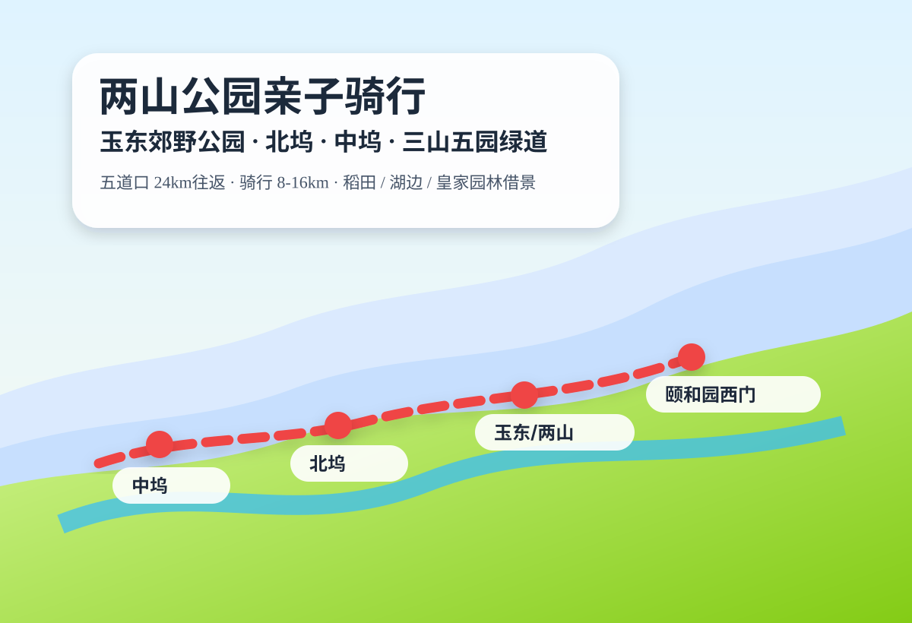
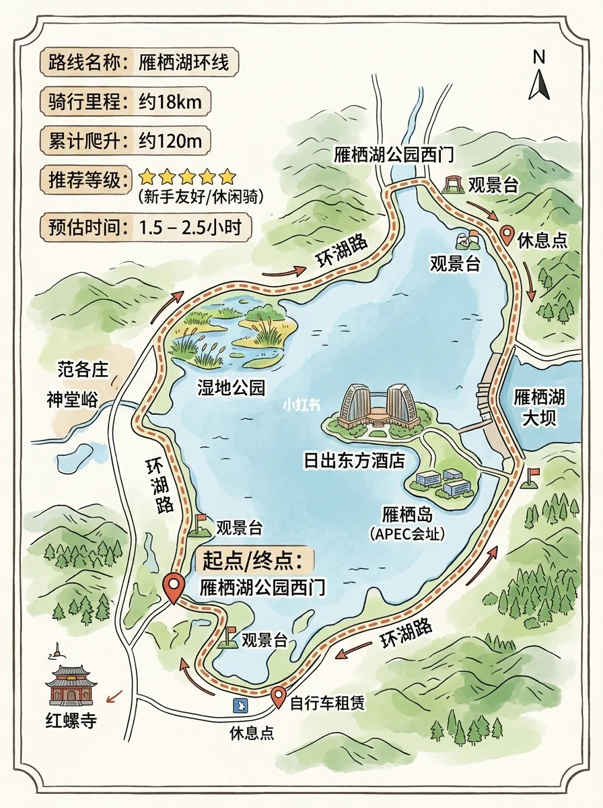
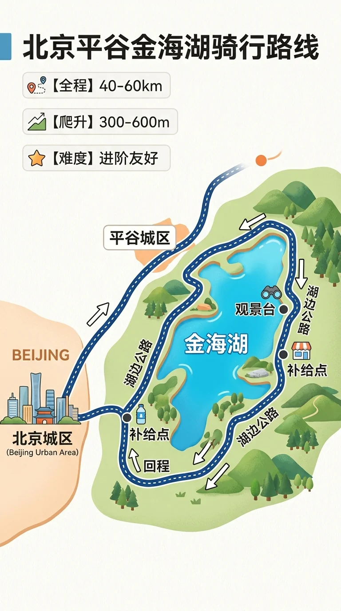
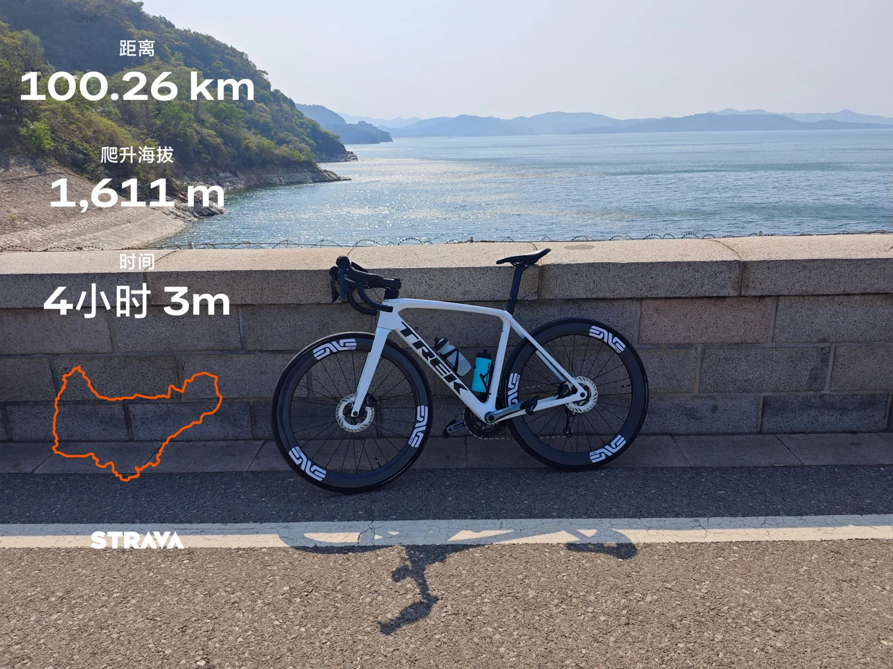
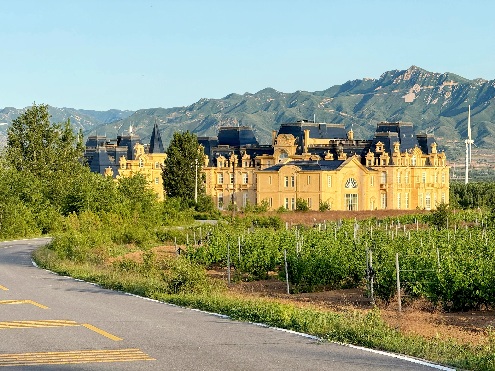
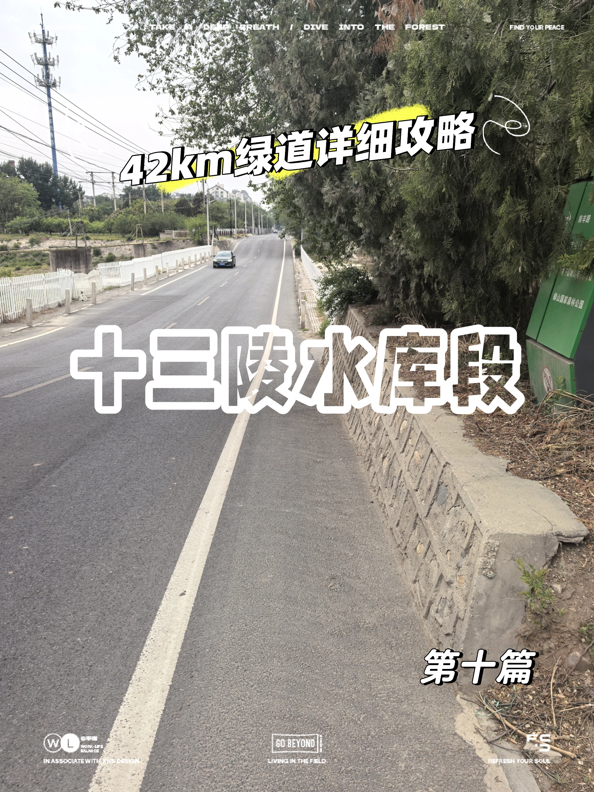
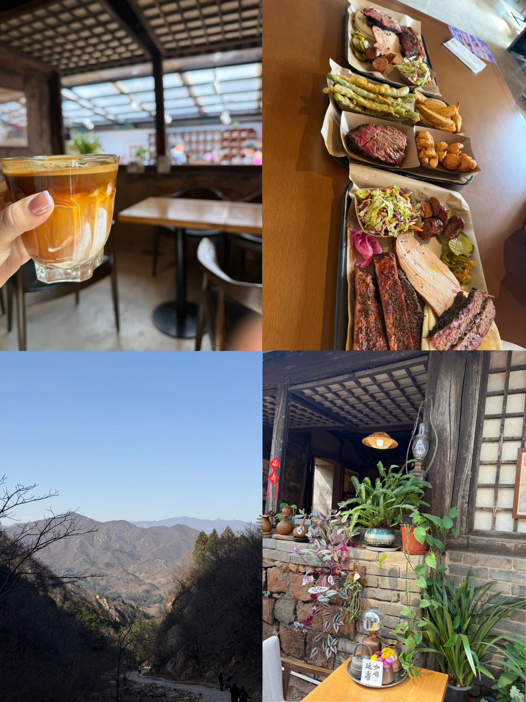

北京周末出行 · vibe trip
五道口出发 · 自驾周末线 · 小红书找氛围 / 六只脚核定量 / 点评 & 携程 & Bing 交叉验证 · 最终落地为可执行行程。
春季周末
五月湖周骑行
徒步 + 休闲
图片版
五道口出发

五月海淀4.5h24km10km / 60m本次新增
两山公园亲子骑行 + 三山五园绿道精华段
玉东郊野公园 / 两山公园L4
北坞 / 中坞公园绿道
西苑 / 肖家河补给兜底

五月怀柔9.0h130km17km / 100m本次新增
雁栖湖环湖骑行 + 湖景发呆 / 轻装逃离城市
湖畔居灶台鱼★ 4.0
兰香阁（凯宾斯基）★ 4.3

五月平谷9.5h170km18km / 220m本次新增
金海湖环湖骑行 + 月季季 / 看北京的海
金麦渔村★ 4.8
湖畔渔家★ 4.7
山野奢咖啡谷★ 4.4

五月密云11.0h160km65km / 900m本次新增
密云水库环库骑行 + 云蒙湖 / 不老屯鱼宴
金鼎鱼香活鱼现杀★ 4.3
岚·coffee★ 3.7

五月延庆11.0h190km35km / 200m本次新增
官厅水库风车骑行 + 野鸭湖 / 京郊小洱海
在不cafe★ 4.7
十六点半餐厅★ 4.4
鸭丫私厨★ 4.2

五月昌平6.0h62km12km / 80m本次新增
十三陵水库环湖亲子骑行 + 最轻松的五月湖边线
十三陵水库★ 4.8
大顺渔村铁锅炖★ 4.7
与田茶咖·汉服★ 4.6

昌平6.5h57km6.9km / 425m
昌平大黑山环线 + 黑山烤房 / 山脚咖啡
大黑山（景）★ 4.3
黑山烤房BBQ★ 4.6
延寿咖啡★ 4.4

怀柔6.0h47km5.7km / 310m
怀柔书画山小环线 + 桃花 / 追火车
书画山风景区★ 3.6
山前wangwangland（咖啡）★ —

门头沟8.5h100km8km / 420m本次新增
龙门涧峡谷轻探 + 农家午饭 / 更野一点的山水峡谷
龙门涧风景区★ 4.8
北京宏宴餐厅★ 4.4
红良民俗特色餐厅★ 4.3

门头沟8.0h37km11.4km / 688m
潭柘寺天坑小环线 + 洞力场 / 阳光房咖啡
潭柘寺景区★ 4.9
gaga★ 4.6
墨托★ 4.2

昌平5.0h44km5.5km / 137m
蟒山 + 十三陵水库观景
蟒山国家森林公园★ 4.9
餐饮：按当天状态就地挑。

昌平6.5h39km7.4km / 412m
白虎涧 + 后院咖啡
白虎涧（后花园店）★ 3.9
后院·咖啡（溜石港店）★ 4.8

海淀7.0h29km7.1km / 684m
凤凰岭 + 素虎 / 山脚恢复
北京凤凰岭★ 4.9
山居岁月（凤凰岭店）★ 4.8
素虎素食（前门店）★ 4.5
已用真实大众点评登录态补齐五月湖周骑行线与龙门涧页的核心点评锚点；首页卡片已同步展示评分、评论量、人均与关键榜单。临出发前仍建议点开详情页里的点评原链复核营业和排队。